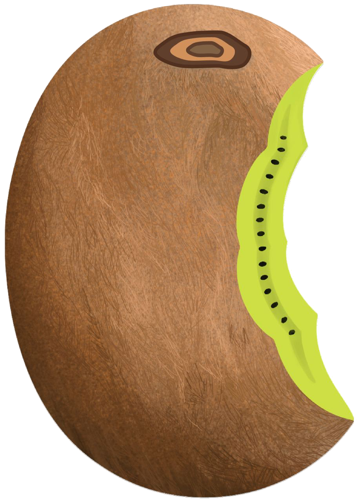
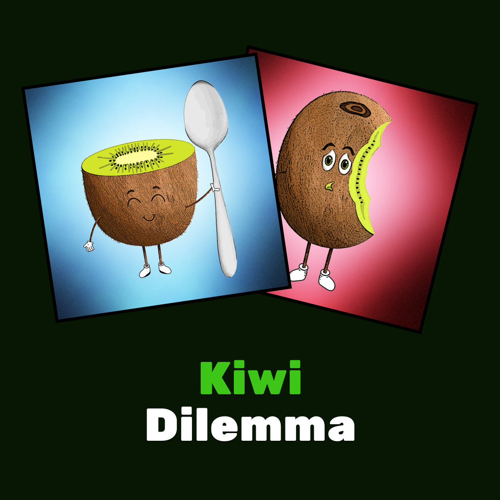
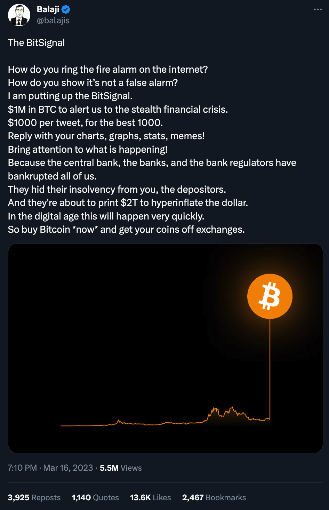

Kiwi story started with a Farcaster post by kenny:
You see it right - some people eat kiwi like an apple, with skin on!

It was both hilarious and shocking for most people on Farcaster.
And before we got over it, the second blow came!
It turned out that Vitalik was an even harder fruit degenerate than
kenny!
And from then on, it became a Farcaster joke.
Very soon, more people started sharing the way they eat kiwis.
Some eat it in the traditional way:
Some drink it:

And some are into even more exotic mixes:
So this is how kiwis became a part of Farcaster's history.
And this is why we decided to immortalize this meme onchain with ZORA
mint.

But... this is not the end of the Kiwi story.
At the same time, Balaji published his famous thread about Bitcoin.
This thread later led to the even more famous bet that the Bitcoin
price would reach $1M.

Tim made fun of it by slapping a mint button on...
And so... "Kiwi News" was born!
...a project, named after a silly joke...
...has become one of the most popular sources of noise-free
content & news for web3 builders.
If you'd like to check it out, go to
kiwinews.xyz!
And remember - for us you can eat kiwi however you want.
🥝